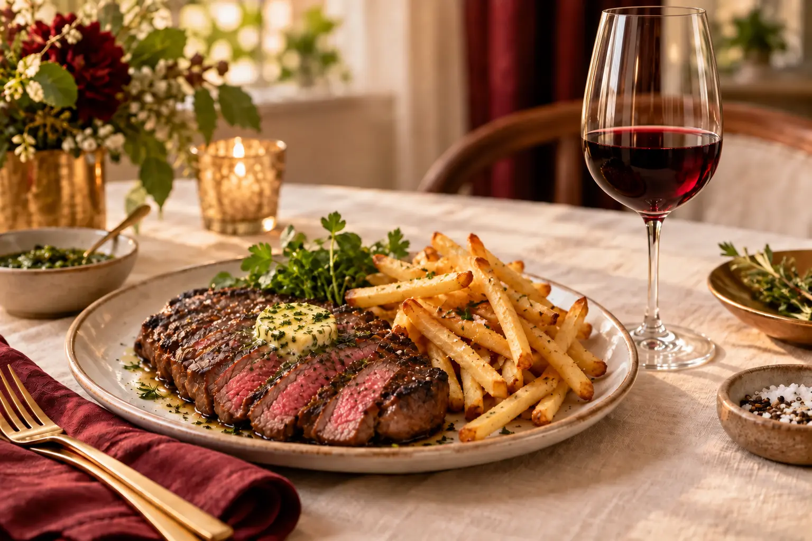

2024
Red Blend
Caractère typique : Fruits noirs, épices douces et finale souple.

Servir légèrement frais, entre 16 et 18°C, dans un verre à Bordeaux ou un verre universel.
- À déguster avec
- Bœuf, hamburgers ou barbecue.
- Conseil de service
- Ouvrir 20 minutes avant de servir.